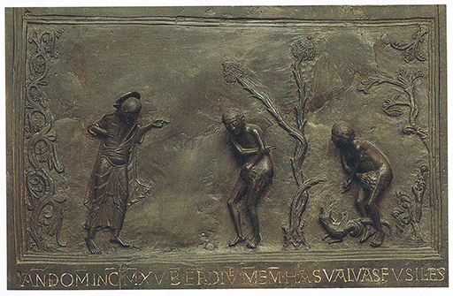

EL ARTE OCCIDENTAL EN EL CRISOL
Europa, del siglo VI al XI
Habíamos dejado la historia del arte occidental en el período de Constantino y en los siglos en que fue amoldado al precepto del papa Gregorio el Grande, el cual declaró que las imágenes eran útiles para enseñar a los seglares la palabra sagrada. El período que viene a continuación de esta primitiva época cristiana, tras el colapso del Imperio romano, es conocido generalmente con el poco halagüeño nombre de edad de las tinieblas. Llamamos tenebrosa a esta época, en parte para dar a entender que las gentes que vivieron durante esos siglos de migraciones, guerras y cataclismos estuvieron sumergidas en la oscuridad y poseyeron muy pocos conocimientos que las guiaran; pero dicha designación también implica que, en cuanto a nosotros, es más bien escaso el conocimiento que poseemos acerca de esos siglos confusos que siguieron a la caída del mundo antiguo, y precedieron el nacimiento de los países europeos en forma aproximada a como actualmente los conocemos. No existen, claro está, límites fijos de tal período, pero para nuestros propósitos podemos decir que duró casi cinco siglos, aproximadamente desde 500 hasta 1000. Quinientos años suponen un dilatado lapso en el cual pudieron ocurrir muchas cosas, como efectivamente ocurrieron.
Pero lo más interesante es que esos años no vieron la aparición de ningún estilo claro y uniforme, sino más bien el conflicto de un gran número de estilos diferentes que sólo empezaron a conciliarse hacia final de dicha época. A quienes conocen algo de la historia de la edad de las tinieblas esto apenas podrá sorprenderles. No fue solamente oscuro este período, sino hecho a retazos, con tremendas diferencias entre las gentes y los estamentos sociales. Durante esos cinco siglos existieron hombres y mujeres, particularmente en monasterios y conventos, que amaron el saber y el arte, y que sintieron gran admiración por aquellas obras del mundo antiguo que habían sido conservadas en bibliotecas y tesorerías. A veces, esos monjes o clérigos ilustrados ocuparon posiciones influyentes en las cortes de los poderosos y trataron de hacer revivir las artes que admiraban. Pero con frecuencia su tarea resultaba inutilizada por las nuevas guerras e invasiones de los asaltantes armados del norte, cuyas opiniones acerca del arte eran muy distintas. Las diversas tribus teutónicas, godos, vándalos, sajones, daneses y vikingos, que recorrieron en incursiones y pillajes continuos toda Europa, eran consideradas bárbaras por cuantos apreciaban las producciones literarias y artísticas de griegos y romanos. En cierto modo, eran bárbaras en realidad; pero esto no quiere decir que carecieran del sentido de la belleza y de un arte propio. Contaban con hábiles artesanos expertos en labrar los metales y con tallistas excelentes comparables a los de los maoríes de Nueva Zelanda (ilustración 22). Gustaban de los esquemas complicados en los que insertaban retorcidos cuerpos de dragones o pájaros entrelazados misteriosamente. Ignoramos dónde surgieron con exactitud esos esquemas del siglo VII ni qué significaban, pero no es improbable que las ideas de esas tribus teutónicas acerca del arte se asemejasen a las de las tribus primitivas de cualquier otra parte. Existen razones para creer que también ellas consideraban esas imágenes como medio de producir efectos mágicos y exorcizar los espíritus malignos. Las figuras de dragones talladas en los trineos y barcos vikingos dan buena idea del carácter de este arte (ilustración 101). Es fácil imaginar que esas amenazadoras cabezas de monstruos eran algo más que decoraciones inocentes. En efecto, sabemos que existieron leyes entre los vikingos noruegos que exigían del capitán del barco que quitara esas figuras antes de regresar a su puerto «para que no asusten a los espíritus del país».
101 Cabeza de dragón, h. 820. Talla en madera hallada en Oseberg, Noruega; 51 cm de altura; colección de la Universidad, Oslo.
Los monjes y misioneros en la céltica Irlanda y la sajona Inglaterra procuraron adaptar las tradiciones de esos artesanos nórdicos a las tareas del arte cristiano. Construyeron en piedra iglesias y campanarios imitando las estructuras de madera utilizadas por los artesanos locales (ilustración 100), pero los más maravillosos monumentos de la consecución de tal propósito son algunos de los manuscritos realizados en Inglaterra e Irlanda durante los siglos VII y VIII.
100 Iglesia de Todos los Santos, Earls Barton, Northamptonshire, h. 1000. Torre sajona que imita una construcción de madera.
La ilustración 103 es una página del Evangeliario de Lindisfarne, compuesto en Northumbria poco antes de 700. Muestra una cruz que incluye un encaje increíblemente rico en dragones o serpientes destacándose sobre un fondo aún más complicado. Resulta tentador tratar de descubrir la continuidad a través de este enrevesado laberinto de formas retorcidas y seguir las colas de esos cuerpos entrelazados. Aún más sorprendente es observar que el resultado no es confuso, sino que los diversos esquemas se corresponden entre sí y forman una completa armonía de dibujo y de color. Cuesta trabajo creer que haya podido haber alguien capaz de concebir un esquema semejante y de tener la paciencia y la perseverancia de realizarlo. Esto demostraría, si fuera preciso, que los artistas que cultivaron su tradición nativa no carecían de habilidad o de técnica.
103 Página del Evangelario de Lindisfarne, h. 698. Biblioteca Británica, Londres.
Uno de los aspectos más sorprendentes surge de observar de qué modo han sido representadas las figuras humanas por esos artistas en los manuscritos ilustrados de Inglaterra e Irlanda. No parecen, en realidad, figuras humanas, sino más bien un conjunto de esquemas lineales obtenidos de formas humanas (ilustración 102). Puede verse que el artista ha utilizado algún modelo que halló en una vieja Biblia, trasformándolo de acuerdo con sus gustos. Cambió los pliegues del vestido por algo semejante a cintas entrelazadas, los bucles del pelo y hasta las orejas en volutas, y convirtió el conjunto del rostro en una máscara rígida. Estas figuras de evangelistas y de santos parecen casi tan rígidas y extrañas como ídolos primitivos, revelando que los artistas que se educaron en la tradición de su arte nativo hallaron difícil adaptarse a las nuevas exigencias de los libros cristianos. Pero, no obstante, sería equivocado considerar tales pinturas como meramente rudimentarias. El adiestramiento de la mano y de los ojos que los artistas habían heredado, y que les permitía realizar un hermoso esquema sobre la página, les ayudó a introducir un nuevo elemento en el arte occidental. Sin esta influencia, dicho arte pudo haberse desarrollado en una dirección similar a la del arte bizantino. Gracias al encuentro de dos tradiciones, la clásica y la de los artistas nórdicos, algo enteramente nuevo comenzó a pergeñarse en la Europa occidental.
102 San Lucas, h. 750. Del manuscrito de un evangelio; Stiftsbibliothek, St. Gallen.
El conocimiento de las antiguas producciones del arte clásico no se perdió del todo. En la corte de Carlomagno, quien se consideraba como el sucesor de los emperadores romanos, la tradición del arte romano fue afanosamente revivida. La iglesia que Carlomagno hizo construir alrededor de 800 en Aquisgrán (ilustración 104) es como una fiel copia de una iglesia famosa que se había edificado en Rávena unos tres siglos antes.
104 Catedral de Aquisgrán, consagrada en 805.
Ya hemos visto que nuestra moderna noción de que un artista debe ser original no fue en modo alguno compartida por la mayoría de los pueblos del pasado. Un maestro egipcio, chino o bizantino se habría asombrado ante tal exigencia. Ningún artista medieval del Occidente europeo habría comprendido por qué tenía que crear nuevos modos de planear una iglesia, dibujar un cáliz o representar escenas de la historia sagrada cuando tan bien habían servido a tal propósito los modos antiguos. El piadoso donante que deseaba dedicar un nuevo altar a una reliquia sagrada de un santo patrón, no sólo intentaba procurarse los materiales más preciosos que se hallaran a su alcance, sino que intentaba suministrar también al maestro que había de ejecutar su encargo un antiguo y venerado ejemplo de cómo debía ser interpretada correctamente la leyenda del santo. El artista no tenía por qué sentirse cohibido por encargos de tal índole, pues le quedaba campo de acción suficiente para demostrar que era un verdadero maestro y no un chapucero.
Tal vez podamos comprender mejor esta actitud si pensamos en nuestro propio criterio respecto a la música. Si le pedimos a un músico que toque en una boda, no esperamos de él que componga algo nuevo para tal ocasión, ni más ni menos que el cliente medieval tampoco esperaba una nueva creación cuando encargaba un cuadro que representase la natividad. Nosotros indicamos el tipo de música que deseamos y el alcance de la orquesta o del coro que podemos permitirnos, con lo que aún queda por cuenta del músico producir una interpretación maravillosa de una obra maestra antigua o una mezcolanza de motivos. Y exactamente lo mismo que dos músicos igualmente grandes pueden interpretar la misma pieza de modo muy distinto, así también dos grandes maestros medievales podían realizar obras de arte muy diferentes con el mismo tema, e incluso con el mismo antiguo modelo. Un ejemplo aclarará el caso más todavía.
La ilustración 105 muestra una página de la Biblia realizada en la corte de Carlomagno. Representa la figura de san Mateo escribiendo el evangelio. Ha sido costumbre en los libros griegos y romanos incluir el retrato del autor en la primera página, y éste del evangelista escribiendo debe ser una copia extraordinariamente fidedigna de ese tipo de retratos. La manera en que el santo está envuelto en su toga, al estilo clásico, así como el modo en que se halla modelada su cabeza con diversas manchas de luz y de color, nos convencen de que el artista medieval hizo cuanto pudo para reproducir un venerado modelo.
105 San Mateo, h. 800. De un evangelio manuscrito, probablemente pintado en Aquisgrán; Museo de Arte Histórico, Viena.
El pintor de otro manuscrito del siglo IX (ilustración 106) probablemente tuvo delante el mismo o un muy similar ejemplo de la primitiva época cristiana. Podemos comparar las manos: la izquierda, sosteniendo un cuerno de tinta y apoyada sobre el facistol; la derecha, cogiendo la pluma; podemos comparar los pies y hasta el ropaje en torno a las rodillas. Pero mientras que el artista de la ilustración 105 se ha esforzado en copiar el original tan fielmente como le fue posible, el artista de la ilustración 106 debió preferir una interpretación distinta. Tal vez no quiso representar al evangelista como un apacible erudito sentado tranquilamente en su estudio. Para él, san Mateo era un hombre inspirado, que ponía por escrito la palabra del Dios. Fue un acontecimiento extraordinariamente importante y significativo en la historia de la humanidad que él quisiera reflejar, y que lograra transmitir, algo de su propia sensación de temor y excitación a través de esta figura de un hombre escribiendo. No son simples tosquedad e ignorancia las que le hicieron dibujar al santo con ojos desorbitados y salientes, y con manos enormes. Se propuso comunicarle una expresión de concentración intensa. Las mismas pinceladas de los ropajes y del fondo parece como si hubieran sido sumidas en una especie de agitación profunda. Considero que esta impresión se debe en parte al placer que evidentemente sentía el artista al aprovechar cualquier oportunidad para dibujar líneas ensortijadas y pliegues zigzagueantes. Pudo haber existido algo en el original que le sugiriera este procedimiento, pero probablemente atraía esto al artista medieval porque le recordaba aquellas cintas y rasgos entrelazados que habían sido la mayor conquista del arte nórdico. En pinturas como ésta, observamos el nacimiento de un nuevo estilo medieval, que hizo posible para el arte algo que ni el antiguo oriental ni el clásico habían realizado: los egipcios plasmaron lo que sabían que existía; los griegos, lo que veían; los artistas del medievo aprendieron a expresar lo que sentían.
106 San Mateo, h. 830. De un evangelio manuscrito, probablemente pintado en Reims; Biblioteca Municipal, Épernay.
No se puede hacer justicia a ninguna obra de arte medieval sin tener presente este propósito, pues esos artistas no se proponían crear una imagen convincente de la naturaleza o realizar obras bellas, sino que deseaban comunicar a sus hermanos en la fe el contenido y el mensaje de la historia sagrada. Y en esto acaso fueron más afortunados que muchos de los artistas anteriores o posteriores. La ilustración 107 pertenece a un Libro de los evangelios que fue ilustrado (o iluminado) en Alemania más de un siglo después, alrededor de 1000. Representa el incidente relatado en el evangelio de Juan (13, 8-9), cuando el Cristo lavó los pies a sus discípulos tras la última cena:
Le dice Pedro: «No me lavarás los pies jamás.» Jesús le respondió: «Si no te lavo, no tienes parte conmigo.» Le dice Simón Pedro: «Señor, no sólo los pies, sino hasta las manos y la cabeza.»
Esta conversación era lo único que le importaba al artista. Representar la habitación en donde la escena tenía lugar era irrelevante para él; incluso podría ser que ella desviara la atención del significado interno del acontecimiento. En cambio, situó las figuras principales contra un fondo dorado, luminoso y plano, sobre el que los gestos de los protagonistas resaltan como una inscripción solemne: la actitud implorante de san Pedro, el gesto calmado con que el Cristo imparte su enseñanza. A la derecha un discípulo se saca las sandalias, otro acerca un recipiente, los demás se apiñan detrás de san Pedro. Todas las miradas se dirigen al centro de la escena con rigidez, dándonos así la sensación de que allí está sucediendo algo de infinita importancia. ¿Qué más da si la redondez de la jofaina no es regular o que el pintor tuviera que dislocar la pierna de san Pedro y adelantar un poco la rodilla para que su pie apareciese claramente en el agua? Lo que le interesaba expresar era el mensaje de la humildad divina, y esto fue lo que transmitió.
107 El Cristo lavando los pies a los apóstoles, h. 1000. Del Libro de los evangelios, de Otto III; Biblioteca Nacional Bávara, Munich.
Resulta interesante detenernos por un instante para mirar hacia atrás, en el tiempo, otra escena que también representa un lavado de pies: el vaso griego pintado en el siglo V a.C. (ilustración 58). Fue en Grecia donde se descubrió el arte de mostrar «los movimientos del alma», y aunque el artista medieval interpretó su propósito de modo muy distinto, sin la herencia griega la Iglesia nunca habría podido hacer uso de las pinturas para sus propios fines.
Recordemos las palabras del papa Gregorio el Grande: «La pintura puede ser para los iletrados lo mismo que la escritura para los que saben leer». Esta búsqueda de claridad aparece no sólo en las ilustraciones pintadas, sino también en esculturas como las del panel de una puerta de bronce que fue encargada para la iglesia alemana de Hildesheim poco después de 1000 (ilustración 108). Presenta al Dios acercándose a Adán y Eva después del pecado original. No hay nada en este relieve que no pertenezca estrictamente al relato bíblico; pero esta concentración de los objetos tratados hace que las figuras se destaquen con la mayor nitidez sobre la lisura del fondo, y casi leemos lo que dicen sus actitudes: el Dios señala a Adán, Adán a Eva, y Eva a la serpiente que está en el suelo. La traslación de la culpa y el origen del pecado están expresados con tanta claridad y tan intensamente que de inmediato olvidamos que las proporciones de las figuras tal vez no sean muy correctas, ni los cuerpos de Adán y Eva bellos según nuestra concepción.

108 Adán y Eva después de la caída, h. 1015. De las puertas de bronce de la catedral de Hildesheim.
No hay que suponer, sin embargo, que todo el arte de este período existiera exclusivamente para servir a ideas religiosas. No sólo se construyeron iglesias en el medievo, sino también castillos, y los barones y señores feudales a quienes pertenecían los castillos también contrataban a artistas de vez en cuando. El motivo por el que somos propensos a olvidar estas obras cuando hablamos del arte del alto medievo es simple: los castillos eran destruidos a menudo, mientras que las iglesias eran conservadas. El arte religioso era tratado, en su conjunto, con mayor respeto, y cuidado con más esmero que las simples decoraciones de las estancias privadas. Cuando éstas quedaban anticuadas, eran retiradas y destruidas, al igual que sucede hoy día. Pero, afortunadamente, un gran ejemplo de este último tipo de arte ha llegado hasta nosotros, porque se conservó en una iglesia. Es el famoso Tapiz de Bayeux, ilustrado con la historia de la conquista normanda. Ignoramos cuándo se ejecutó exactamente este tapiz, pero muchos especialistas están de acuerdo en que fue mientras estuvo vivo el recuerdo de las escenas que en él se reproducen, acaso alrededor de 1080. El tapiz es una crónica gráfica del tipo de las que ya conocemos del arte romano y del antiguo Oriente (la Columna de Trajano, por ejemplo, ilustraciones 77 y 78), esto es, la narración de una campaña y una victoria, la cual fue plasmada con maravillosa vivacidad. En la ilustración 109 podemos ver, según nos dice la inscripción, cómo prestó Harold su juramento a Guillermo, y en la ilustración 110 cómo regresa a Inglaterra. El modo de contar la historia no podía ser más claro: vemos a Guillermo sentado en su trono contemplando cómo pone Harold su mano sobre las reliquias santas para prestar juramento de fidelidad, juramento del cual se sirvió Guillermo como pretexto para sus aspiraciones sobre Inglaterra. Mis preferencias particulares son para la figura de hombre que se halla en el balcón de la escena siguiente, el cual coloca su mano sobre los ojos para otear la llegada del barco de Harold. Ciertamente, sus brazos y sus dedos parecen un tanto extraños, y todas las figuras de la escena como insólitos y pequeños muñecos, que no están dibujados con la seguridad de los asirios y romanos. Cuando el artista medieval de esa época carecía de modelo que copiar, dibujaba en cierto modo como un niño, pero hacer lo que él hacía no resulta fácil en absoluto. Refiere la narración épica con una economía de medios y con tal concentración en lo que a él le parecía importante, que el resultado final resulta más impactante que los reportajes actuales en prensa o televisión.
109, 110 Tapiz de Bayeux, h. 1080. El rey Harold prestando juramento al duque Guillermo de Normandía y, luego, regresando a Inglaterra; friso, 50 cm de altura; Museo de Tapices, Bayeux.
El hermano Rufillus trazando la letra R, siglo XIII. Detalle de un manuscrito iluminado; Fundación Martin Bodmer, Ginebra.